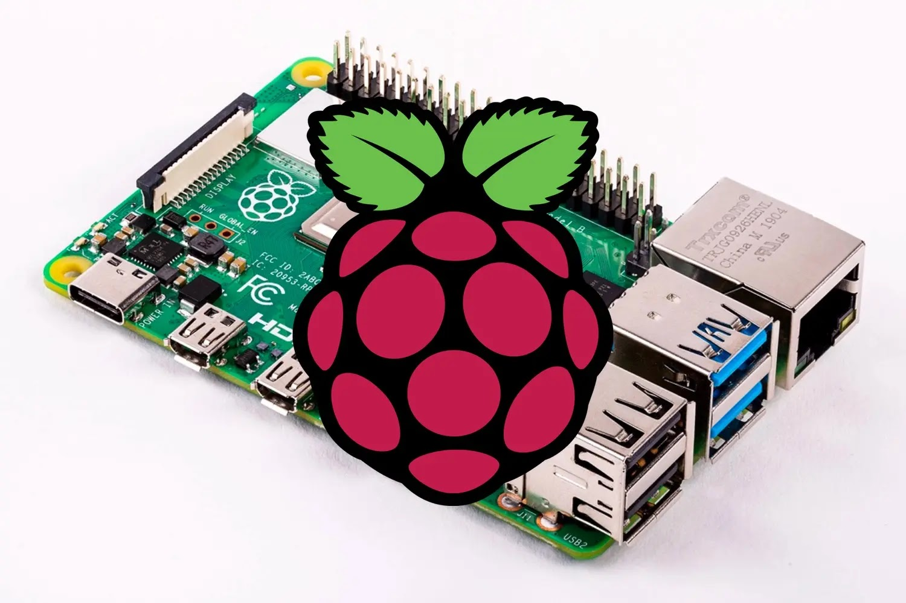

Raspberry
La Raspberry Pi es una computadora de bajo costo y con un tamaño compacto, del porte de una tarjeta de crédito, puede ser conectada a un monitor de computador o un TV, y usarse con un mouse y teclado estándar. Es un pequeño computador que correo un sistema operativo linux capaz de permitirle a las personas de todas las edades explorar la computación y aprender a programar lenguajes como Scratch y Python. Es capaz de hacer la mayoría de las tareas típicas de un computador de escritorio, desde navegar en internet, reproducir videos en alta resolución, manipular documentos de ofimática, hasta reproducir juegos. Videos Explicación
En caso de estar interesado en comprar los mejores entra al link